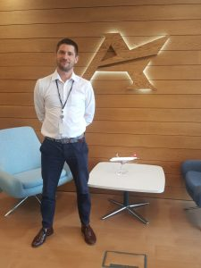
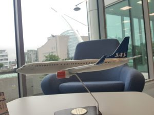

Work Experience
Accipiter DAC


Accipter is an Irish leasing company based in Dublin. The enterprise is a small to meduim size entity owning mostly A320 and 737 family aircraft. During my time as intern my main resonabilties included generating the weekly technical report, aircraft monitoring and technical and legislative research reporting on its apllicabilty to our fleet. I was also tasked with updating and organising our technical data bases. I also enjoyed partaking in meetings across the various other departments and with representatives from companies such as Airbus and Boeing. The internship gave me a great deal of insight into the leasing sector and I am very eager to learn more.
Nebula NJ LLC


Nebula is a small engineering company based in New Jersey. They specialise in sensor installation and monitoring. Pictured above are two systems that are very popular with clients. The first being where light poles are placed at selected locations on a conveyor belt system. The different colour lights illuminate to indicate what item should be added to the specific package, allowing workers to place items confidently and quickly. The second picture features a solar panel which powers an ultra sonic level sensor and control module. The sensor sends ultra sonic waves to deduce the level of the water in the well. The module transmits the data to a remote monitoring system to alert operators to out of tolerance conditions.
Pierce Construction

This construction company was one of the biggest in the country with many large scale projects completed. My work with them mainly involved civil engineering assistance duties such as ‘’setting out’’.
Pictured above is a total station. The device compares distances, angles and elevations with the data uploaded on the device. The engineer can instruct the assistant to place a marker at the relevant place. This is called setting out, where we ‘set out’ the perimeters of buildings, roads etc. The device can also work in reverse, whereby the data is obtained by taking surveys. This will give a layout of all features important to the client, for example; manhole covers, services and terrain.
Other duties included setting concrete pour levels. I spent time inspecting completed work by bricklayers using laser levels. I also performed concrete slump tests and sent prepared concrete samples out for destructive testing.